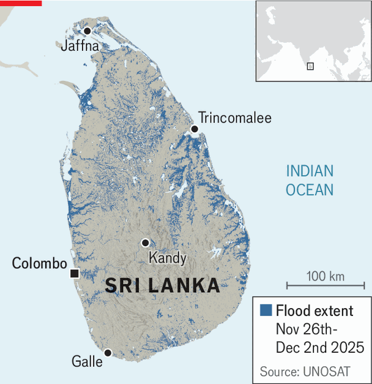

Asia | Shocks absorbed
Led by a Marxist, battered by a storm, Sri Lanka is doing better
India’s growing involvement in its neighbouring country is one factor
February 12th 2026

IT IS ONE THING for a small island to suffer the worst economic crisis in its history, little more than a decade after the end of a protracted civil war. Then, just as it was getting back on its feet, a giant cyclone washed away roads and railways and displaced more than 100,000 people.
That is the plight of Sri Lanka, which since November has been recovering from Cyclone Ditwah. An inexperienced government—led by a former Marxist revolutionary committed to stamping out graft—has weathered the storm, and proved itself a surprisingly responsible handler of the country’s debts. But the economic and environmental blows have left their marks. Sri Lanka’s recovery remains fragile.
Ditwah was the first big test of Anura Kumara Dissanayake, who was elected president in September 2024 and leads a coalition of parties previously unsullied by high office. Though Sri Lanka is routinely battered by storms, this was its most severe natural disaster since the tsunami of December 2004. Ditwah ravaged the island for three days, hitting hardest in the poor central uplands. Some towns and villages saw a fifth of their usual annual rainfall fall in a single day. The rains unleashed more than a thousand landslides.

The government botched the immediate response. Despite officials in Colombo, the capital, knowing what was coming, some towns and villages received no warning. Co-ordination was chaotic: it took over a week for medical supplies to reach some remote areas. Both failures added to a death toll that surpassed 800, including those missing and presumed dead. That is much lower than the more than 30,000 who died in 2004, when a 30-metre wave hit the highly populated coastline. But asset losses were probably on a similar scale this time, in part because of extensive damage to bridges and power stations and because widespread landslides damaged the foundations of many buildings. The latest assessment suggests a hit of $3.5bn, or 3.5% of GDP, says Marc-André Franche, the UN’s country co-ordinator.
The recovery phase has gone better. Many roads and railways were reopened quickly; the government has found money for food, shelter and housing. Anil Fernando, the deputy minister of finance, says the aim is to “build back better”. One effect of Ditwah has been to reveal how disaster relief works in an indifferent world. Traditional donors such as America and Europe now have little presence there, and the supply of aid has fallen sharply. But others have stepped in, mostly to help with the emergency. The United Arab Emirates, where many Sri Lankans work, provided manpower, equipment and rescue vehicles.
Above all there was India, which had both the means and the self-interest, given that it has tricky relations with most of its neighbours. Even before the heavy rain had stopped, Indian choppers were running missions from an aircraft-carrier docked in Colombo to rescue the stranded. Its engineers have rebuilt dozens of bridges, using imported prefabricated kits. In December it pledged $100m in aid and $350m in concessional loans—by far the most generous package. China, by contrast, has been notable by its absence. Some in Colombo speculate that that is because it is waiting for a $3bn oil refinery project to be signed off.
This is but one of the ways in which Mr Dissanayake’s administration is a puzzle. He is the first Sri Lankan leader to hail from the JVP, a Marxist group that led insurrections in the 1970s and 1980s and has long looked to Russia and China for inspiration. Portraits of Marx, Engels and Lenin still hang at JVP party headquarters; insiders say that the government can be slow to act because some decisions must pass through a politburo, on which Mr Dissanayake and party apparatchiks sit.
Yet having won power, Mr Dissanayake has tilted not towards China, but to India. And rather than tearing up an IMF plan negotiated by his predecessor, the former revolutionary has proved an unlikely midwife to fiscal discipline. His government, which has delivered two budgets, has earned plaudits from the fund for exceeding its belt-tightening targets, largely by boosting tax revenues while holding down spending. Opposition figures seem mystified. “It’s like the parish priest preaching bana at the Buddhist temple,” says Harsha de Silva of the liberal SJB party.
Mr Dissanayake is pulling off the act for now. A charismatic speaker who reaches Sri Lankans via giant rallies and social-media clips, he remains highly popular. And in many ways the country’s position has improved since its economic crash. Foreign-exchange reserves have been rebuilt and inflation curbed. The government has passed a law to improve the oversight of tax and spending. Ditwah barely dented a booming tourism industry.
Given what came before, many Sri Lankans seem willing to be patient. But for how long? Beyond being anti-graft and pro-IMF, the government has little sense of direction. “The pitch seems to be we’re not corrupt, bring in the investors,” says Talal Rafi, a Sri Lankan economist. A surplus has been achieved in part by cutting much-needed capital investment. And though Mr Dissanayake is a pragmatist, the politburo may restrict his ability to remove the shackles on Sri Lanka’s economy, from high trade barriers to restrictive labour laws and a bloated public sector that employs one in five Sri Lankan workers.
The balance could tip sooner rather than later. For all that fiscal targets have been met, says Nishan de Mel of Verité, a think-tank in Colombo, two crises in four years have taken a heavy toll. The country’s poverty rate has doubled since 2019, to 30% (using the government’s own dynamic local-currency threshold of the equivalent currently of $1.71 a day); after Ditwah it is likely to rise further still. Real incomes have stagnated. With debt repayments locked in for years, there is more pain to be distributed. Getting back onto the path of development will be precarious. ■